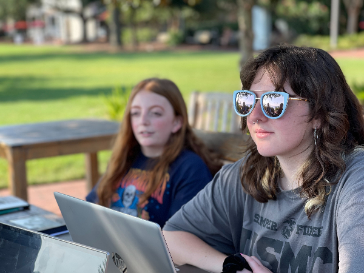
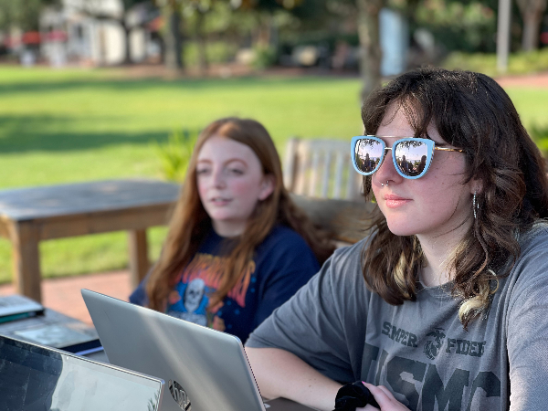
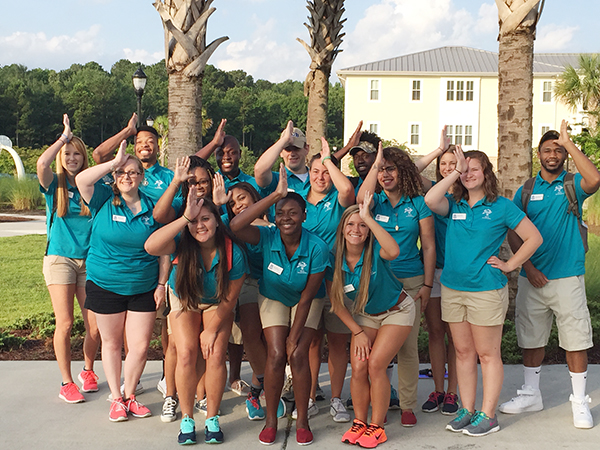
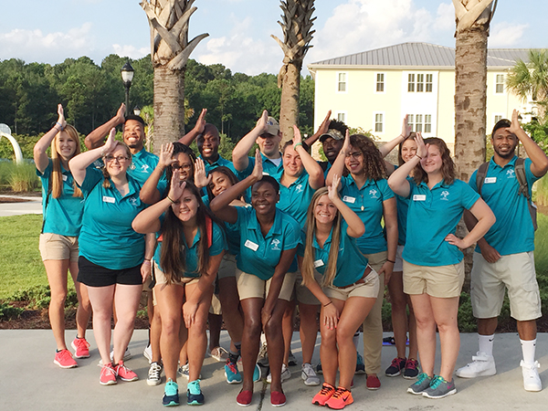

ABOUT
Section Heading
Campus Life is the heartbeat of student engagement at USCB—and we're proud to be the newest and most spirited department on campus! Blending the energy of Student Life with the excitement of Campus Recreation, we're here to create unforgettable experiences for every Sand Shark. We host a little bit of everything—from DIY craft nights and sunset yoga on the bluff, to open mic coffeehouse evenings, game day watch parties, and monthly themed socials (yes, Sharkchella is real!). Our intramural leagues and tournament series keep the competitive spirit alive, with everything from flag football and spikeball to Mario Kart and pickleball. Looking to get involved or make your mark? We oversee all student clubs and organizations—from cultural and academic groups to special interest and leadership councils. If you can't find what you're looking for, we'll help you start something new. We also offer workshops on leadership development, event planning, and community outreach—because we believe your college experience should prepare you for more than just a degree. Need a place to relax or recharge? Drop by the Campus Life Lounge in the Sandbar Center—home to comfy couches, free popcorn Fridays, a crafting nook, and the best playlist on campus. At Campus Life, we believe college should be more than just class schedules and exams. It should be meaningful, memorable, and fun. Whether you're here to connect, lead, compete, create, or simply enjoy the vibe, we're here to support you every step of the way. This is your time—make it count. Dive into Campus Life.
Section Heading
 



 
